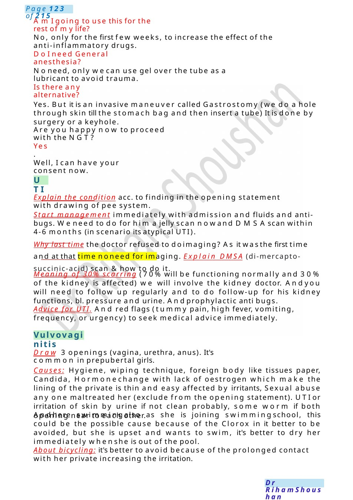
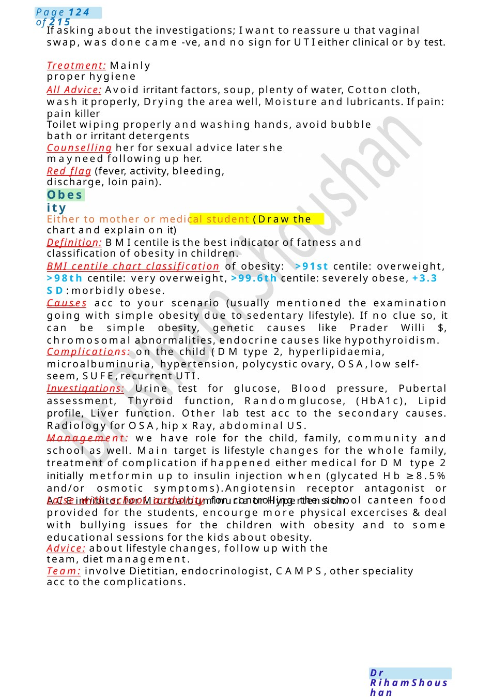

UTI
No, only for the first few weeks, to increase the effect of the anti-inflammatory drugs. Noneed, only wecan use gel over the tube as a lubricant to avoid trauma.
Scenario Summary
No, only for the first few weeks, to increase the effect of the anti-inflammatory drugs. Noneed, only wecan use gel over the tube as a lubricant to avoid trauma.
Full Original Scenario

UTI
Vulvovaginitis
AmI going to use this for the rest of mylife?
No, only for the first few weeks, to increase the effect of the anti-inflammatory drugs.
DoI need General anesthesia?
Noneed, only wecan use gel over the tube as a lubricant to avoid trauma.
Is there any alternative?
Yes. But it is an invasive maneuver called Gastrostomy (we do a hole through skin till the stomach bag and then insert a tube) It is done by surgery or a keyhole.
Are you happy now to proceed with the NGT?
Yes.
Well, I can have your consent now.
Explain the condition acc. to finding in the opening statement with drawing of pee system.
Start management immediately with admission and fluids and anti-bugs. Weneed to do for him a jelly scan nowand DMSAscan within 4-6 months (in scenario its atypical UTI).
Why last time the doctor refused to doimaging? As it wasthe first time and at that time noneed for imaging. Explain DMSA (di-mercapto-succinic-acid) scan & how to do it.
Meaning of 30% scarring (70% will be functioning normally and 30% of the kidney is affected) we will involve the kidney doctor. Andyou will need to follow up regularly and to do follow-up for his kidney functions, bl. pressure and urine. Andprophylactic anti bugs.
Advice for UTI. And red flags (tummy pain, high fever, vomiting, frequency, or urgency) to seek medical advice immediately.
Draw 3 openings (vagina, urethra, anus). It's common in prepubertal girls.
Causes: Hygiene, wiping technique, foreign body like tissues paper, Candida, Hormonechange with lack of oestrogen which make the lining of the private is thin and easy affected by irritants, Sexual abuse any one maltreated her (exclude from the opening statement). UTIor irritation of skin by urine if not clean probably, some worm if both opening near to each other.
Andhere swimmingalso as she is joining swimmingschool, this could be the possible cause because of the Clorox in it better to be avoided, but she is upset and wants to swim, it's better to dry her immediately whenshe is out of the pool.
About bicycling: it's better to avoid because of the prolonged contact with her private increasing the irritation.

Obesity
If asking about the investigations; I want to reassure u that vaginal swap, was done came -ve, and no sign for UTIeither clinical or by test.
Treatment: Mainly proper hygiene
All Advice: Avoid irritant factors, soup, plenty of water, Cotton cloth, wash it properly, Drying the area well, Moisture and lubricants. If pain: pain killer
Toilet wiping properly and washing hands, avoid bubble bath or irritant detergents
Counselling her for sexual advice later she mayneed following up her.
Red flag (fever, activity, bleeding, discharge, loin pain).
Either to mother or medical student (Draw the chart and explain on it)
Definition: BMIcentile is the best indicator of fatness and classification of obesity in children.
BMI centile chart classification of obesity: >91st centile: overweight, >98th centile: very overweight, >99.6th centile: severely obese, +3.3 SD: morbidly obese.
Causes acc to your scenario (usually mentioned the examination going with simple obesity due to sedentary lifestyle). If no clue so, it can be simple obesity, genetic causes like Prader Willi $, chromosomal abnormalities, endocrine causes like hypothyroidism.
Complications: on the child (DM type 2, hyperlipidaemia, microalbuminuria, hypertension, polycystic ovary, OSA,low self-seem, SUFE,recurrent UTI.
Investigations: Urine test for glucose, Blood pressure, Pubertal assessment, Thyroid function, Randomglucose, (HbA1c), Lipid profile, Liver function. Other lab test acc to the secondary causes. Radiology for OSA,hip x Ray, abdominal US.
Management: we have role for the child, family, community and school as well. Main target is lifestyle changes for the whole family, treatment of complication if happened either medical for DM type 2 initially metformin up to insulin injection when (glycated Hb ≥8.5% and/or osmotic symptoms).Angiotensin receptor antagonist or ACEinhibitor for Microalbuminuria or Hypertension.
Laise with school authority for controlling the school canteen food provided for the students, encourge more physical excercises &deal with bullying issues for the children with obesity and to some educational sessions for the kids about obesity.
Advice: about lifestyle changes, follow up with the team, diet management.
Team: involve Dietitian, endocrinologist, CAMPS,other speciality acc to the complications.